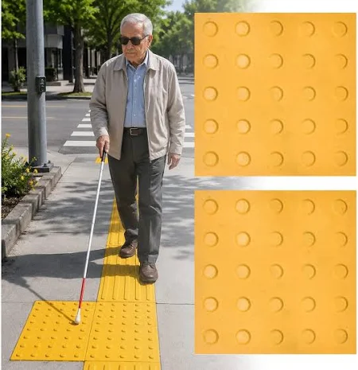

Acessibilidade nas ruas
Imagine sair de casa para pegar o ônibus e encontrar uma lixeira bloqueando a calçada. Quem usa cadeira de rodas pode precisar voltar e procurar outro caminho. Se o único desvio for pela rua, um trajeto simples passa a exigir uma decisão de segurança.
Uma travessia depende do caminho inteiro
Uma faixa de pedestres liga dois lados da rua. Se houver um rebaixamento na calçada de saída, mas um meio-fio alto do outro lado, a pessoa ainda vai encontrar uma barreira antes de concluir a travessia. Calçadas regulares, passagens livres e rebaixamentos alinhados com a faixa tornam o trajeto mais contínuo.
Como a sinalização ajuda?
O piso tátil direcional pode orientar pessoas cegas ou com baixa visão ao longo de um percurso. Quando uma placa, uma moto ou uma mesa ocupa esse caminho, a orientação é interrompida. Em travessias, um semáforo com sinal sonoro também pode ajudar a identificar o momento indicado para atravessar.
